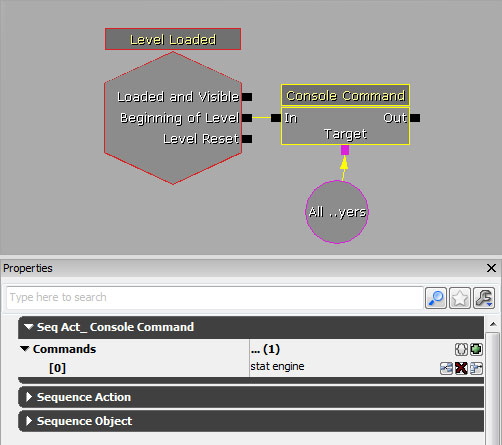
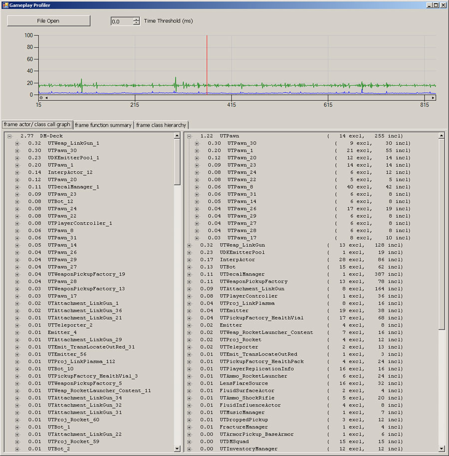
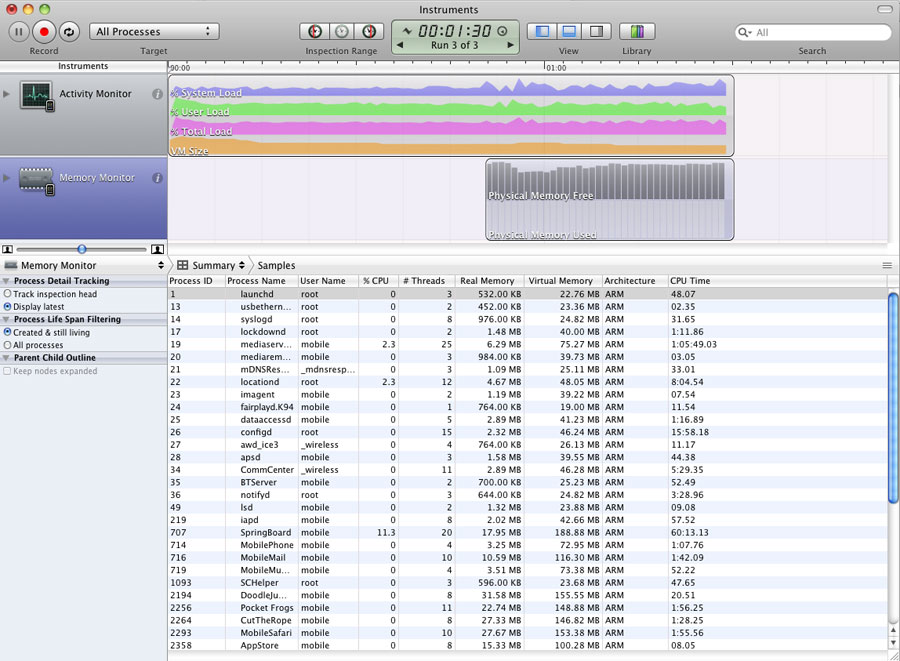

UDN
Search public documentation:
MobileProfilingHomeJP
English Translation
中国翻译
한국어
Interested in the Unreal Engine?
Visit the Unreal Technology site.
Looking for jobs and company info?
Check out the Epic games site.
Questions about support via UDN?
Contact the UDN Staff
中国翻译
한국어
Interested in the Unreal Engine?
Visit the Unreal Technology site.
Looking for jobs and company info?
Check out the Epic games site.
Questions about support via UDN?
Contact the UDN Staff
モバイルデバイスのためのプロファイリング
概要
STAT コマンド
 STAT コマンドの全リストと統計の説明については、 Stat コマンド解説 のページを参照してください。
これらのコマンドと統計は、2～3 の例外を除いて、PC 上でゲームをプロファイルする場合とまったく同じように機能します。
STAT コマンドの全リストと統計の説明については、 Stat コマンド解説 のページを参照してください。
これらのコマンドと統計は、2～3 の例外を除いて、PC 上でゲームをプロファイルする場合とまったく同じように機能します。
コマンドの実行
モバイルゲームにはコンソールがないため、キーボード入力によって自由にコマンドを実行することができません。コマンドを実行するための方法を以下にいくつか紹介します。- Kismet - シーケンスを Kismet 内でセットアップして、STAT コマンドを実行することができます。そのためにはコンソールコマンド アクションを使用します。これらのシーケンスは、レベルの開始時、または、特定のイベントが発生したときにアクティベートされます。

- UnrealScript - UnrealScript を利用することによって、STAT コマンドを実行することができます。そのためには、
PlayerController上のConsoleCommand()関数を呼び出し、それに実行すべきコマンドを渡します。これによって非常に柔軟な処理が可能になりますが、当然のことながら、さまざまなコマンドを呼び出すには、コードを変更して再コンパイルする必要があります。 - メニューボタン - モバイルメニューシステム を使用してデバッグメニューを作成することができます。メニュー内にある各ボタンによって、それぞれのコマンドを実行することができます。そのためには、UnrealScript を使用して、上記で説明したのと同じ方法をとります。

限られたスクリーンスペース
注意しなければならないことは、STAT コマンドが直接スクリーン上に統計情報を表示するということです。つまり、どのコマンドであっても統計情報は一部しか表示されない可能性があるということになります。また、複数のグループの統計情報を同時に表示することは事実上不可能であるということになります。もちろん、 モバイル プレビューア でゲームを稼働させる場合にはこれらのコマンドを使用することが常に可能であり、それによって統計情報すべてを表示することはできます。以上のことは確実に覚えておかなければなりません。ゲーム スレッドのプロファイリング

プロファイリング ファイルを回収する
モバイルデバイスを使用している場合、プロファイリング ファイルはデバイス自体に作成されます。これらのファイルを使用するには、デバイスから取り戻す必要があります。そのためのプロセスについて以下に説明します。 Unreal iPhone Packager ツールを使用して iPhone からファイルを取得する方法は、つぎのとおりです。-
/binaries/iPhone/にある IPP.exe を開きます。 - [Deployment Tools] (デプロイ ツール) タブから、デバイスを選択し、 Backup Documents (ドキュメントのバックアップ) をクリックします。
- デバイス上で使用した IPA に進みます。たとえば、Release MobileGame をクックした場合は、IPA は
\Binaries\IPhone\Release-iphoneos\MobileGame\MobileGame.ipaとなります。 - ファイルは、
\UnrealEngine3\MobileGame\iOS_Backups\に保存されることになります。 - 関連するアプリケーション (GameplayProfiler.exe など) を使ってどのプロファイリングファイルでも開くことができます。
Instruments

ゲームに関連するプロセスおよびメモリをモニターするには、つぎのようにします。- Library の iPhone セクションから、Memory Monitor (メモリのモニター) と Activity Monitor (動作のモニター) を選択します。
- ゲームを稼働している iOS デバイスを選択するとともに、[ Record ] ボタンの側にあるドロップダウンから All Processes (全プロセス) を選択します。
- [ Record ] ボタンをクリックしてプロファイリングを開始します。
メモリプロファイラ
一般的なパフォーマンス問題
- モバイルデバイス上でガンマ補正を使用すると、パフォーマンスに深刻な影響を与える可能性があります。これは、パワフルで将来登場するモバイルデバイスによる使用のみを想定したものです。(iPad 2 以降)。もし、モバイルデバイス上でマップのためにガンマ補正を有効にしたことによって、パフォーマンス上の問題が見て取れた場合は、それを無効にして、コンテンツを通してガンマ補正の欠如という問題に対応しなければならない可能性があります。非ガンマ補正のモバイルデバイス用にコンテンツを設計するためには、 ガンマ を参照してください。